Our Journey of Impact
From strategic partnerships to rural outreach, Church Life Africa is dedicated to forming the next generation of Catholic leaders across the continent.
Upcoming Opportunities
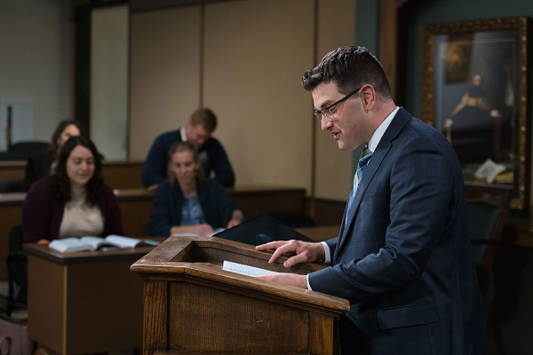
Theology for Service Leadership
A two-year advanced certificate in theology with internship and mentorship placements.
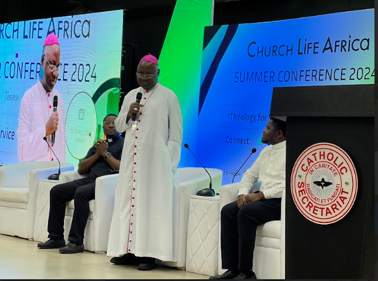
CLA Summer Conference for Priests
A strategic gathering of 100 priests from across Africa focusing on formation and renewal.
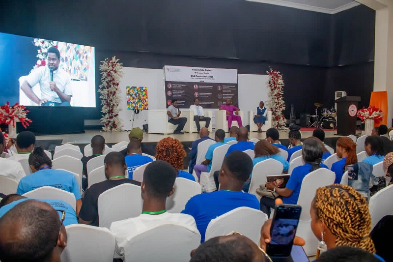
CLA Annual Summer Conference
Over 300 lay Catholics from 50+ dioceses gathering to learn from the Catholic world.
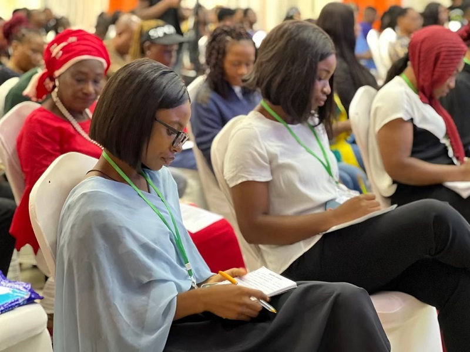
Exploring Catholicism
Quarterly engagements for today’s curious and committed Catholics on faith and modern life.
A Journey of Faith & Impact
Academic Faculty Appointment
CLA Director, Fr. Ken Amadi, joins the faculty at the Augustine Institute Graduate School of Theology.
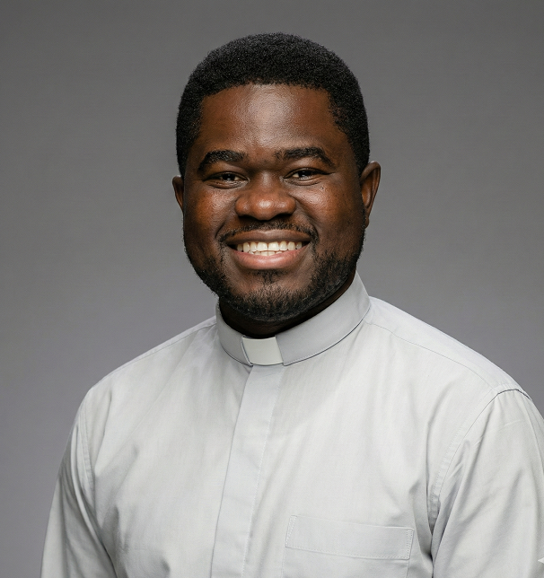
Augustine Institute President Visits Nigeria
Dr. Tim Gray makes his first visit to Nigeria, meeting with Archbishop Ignatius Kaigama, and engaging with over 300 participants at the CLA Summer Conference.
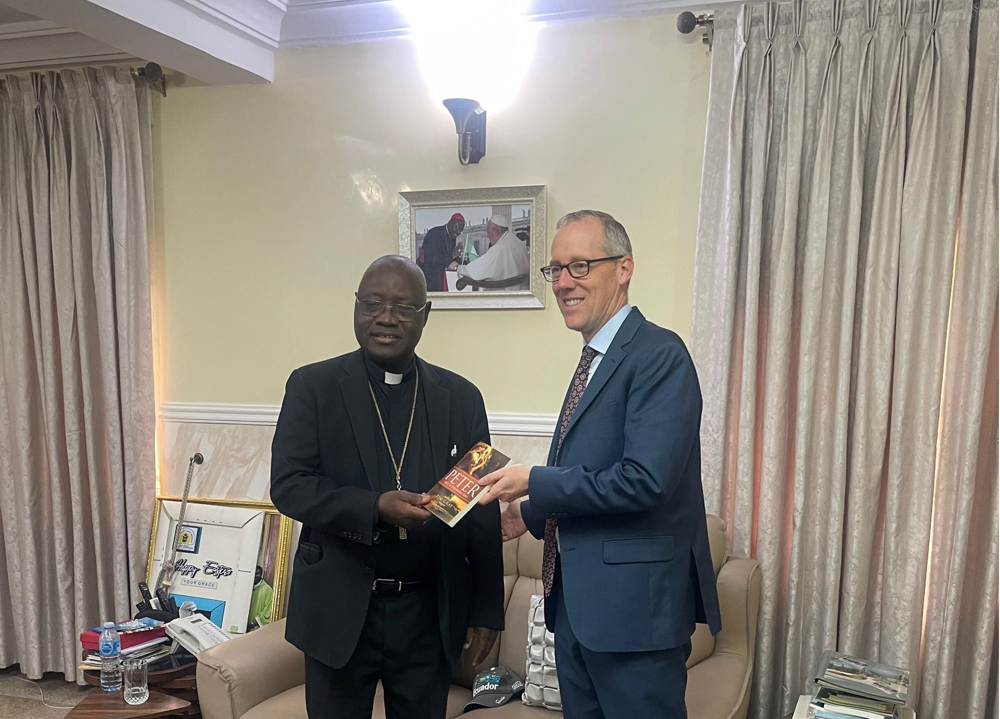
Strategic Collaborations
Stakeholder engagement with priests and local lay apostolates to expand our mission
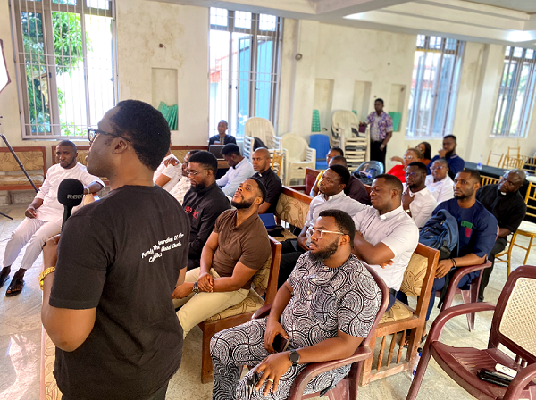
CLA Office Opens in Abuja
With a 5-year lease at the Gaudium et Spes Institute, including office space, library, lecture rooms, chapel, etc., CLA consolidates partnership with the Archdiocese of Abuja
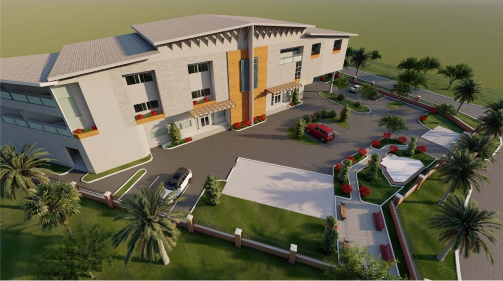
Radio Maria
CLA director, Fr Ken Amadi, and board secretary, Dr Arnaud Zimmern (with wife Abby Zimmern) featured on the show, Youth Spotlight on Radio Maria, with host Eddidiong Udofot.
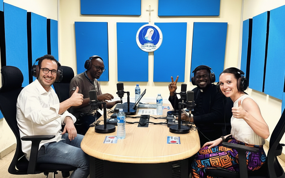
Media Recognition
Church Life Africa's mission featured on Arise News and aciafrica, highlighting the impact of Church Life Africa
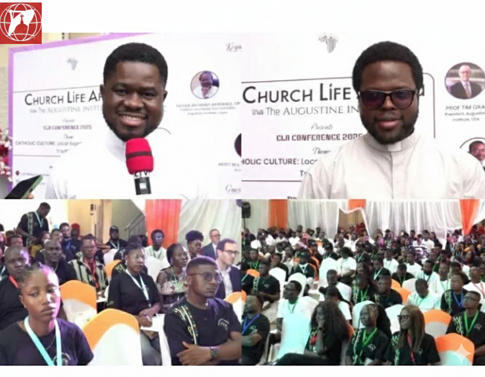
Rural Evangelization Program
CLA to launch Rural Evangilization program reaching non-English speaking Catholics with resources translated into local languages.
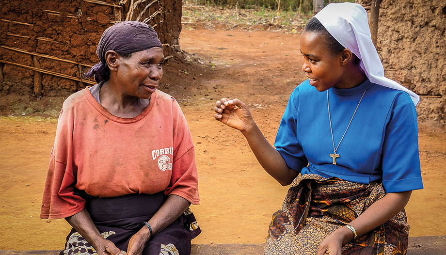